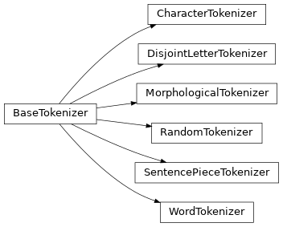

tokenizers¶
tkseem Package¶
Classes¶
|
Character based tokenization |
|
Disjoint Letters based tokenization |
|
Auto tokenization using a saved dictionary |
|
Randomized based tokenization |
|
Sentencepiece based tokenization. |
|
White space based tokenization |
Class Inheritance Diagram¶
